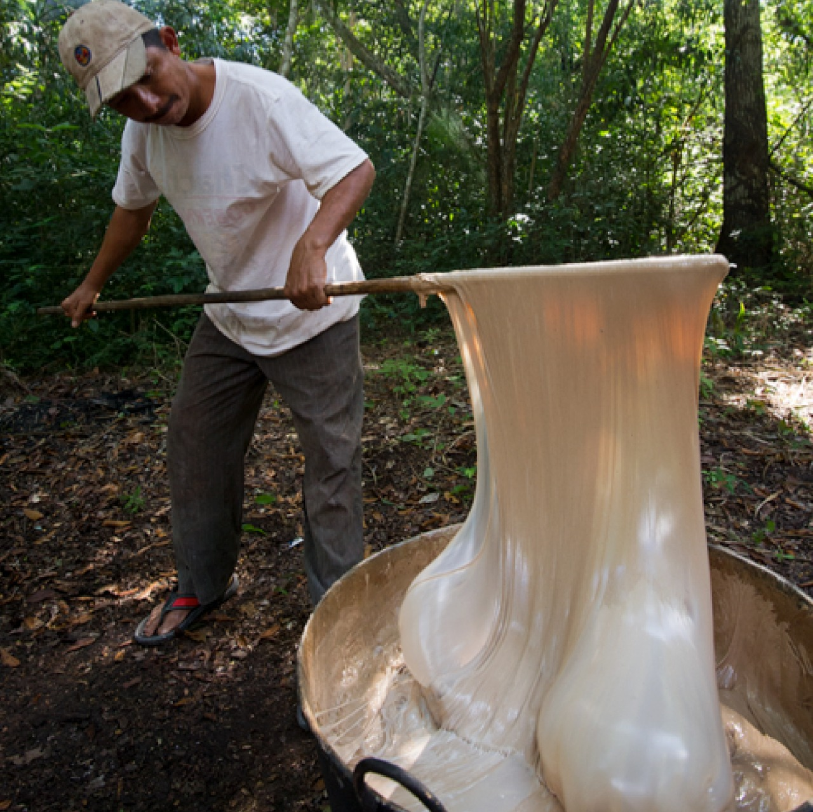
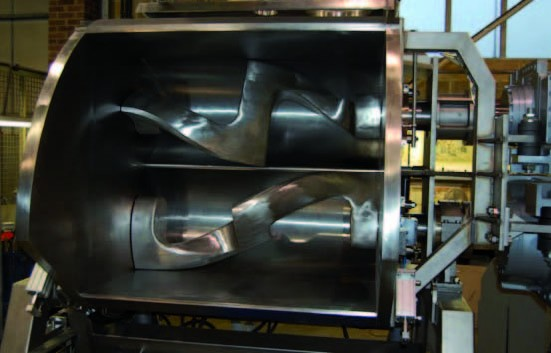
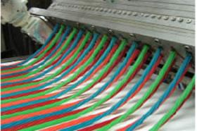
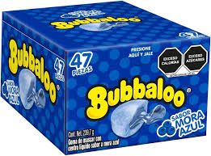

¿Cómo se fabrican los chicles?
1. Extracción de la resina
Se obtiene del árbol del zapote mediante incisiones en su corteza (para chicles naturales).
2. Mezcla de ingredientes
La base de chicle se combina con endulzantes, saborizantes y colorantes.
3. Moldeado y corte
La masa se estira, corta y moldea en láminas o formas específicas.
4. Revestimiento y empaquetado
Los chicles se recubren con azúcar (opcional) y se envuelven individualmente.
